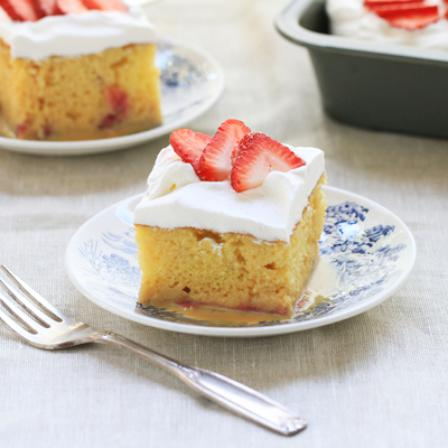

Pastel de Tres Leches

Description
This recipe produces a soft and fluffy wet cake in
authentic latin style! As the name suggests, the cake
is soaked in three milks, adding extra moisture and sweentess
to this tasy treat. The cake is topped with whipped cream,
sliced strawberries, and a dusting of cinnamon.
Ingredients
- 1 box Duncan Hines white cake mix
- 1 small box Jello instant cheesecake pudding mix
- 3 eggs
- 2 tablespoons of oil
- 1 1/3 cups water
- 1 can sweetened condensed milk
- 1 can’s worth of whole milk
- 1 half pint of heavy whipping cream
- 1 tub of whipped cream
- 1/2 pound of strawberries, sliced
- Cinnamon to taste
Steps
- Preheat oven to 350 degrees.
- In a large bowl, combine cake mix, pudding mix, water, oil, and eggs until well-blended.
- Pour batter into ungreased 9x13 glass pan.
- Bake for about 30 minutes.
- Allow cake to cool thoroughly.
- In a large bowl, combine sweetened condensed milk, whole milk, and heavy whipping cream. Stir until homogeneous.
- Using a fork, poke holes throughout the entire surface of the cooled cake.
- Pour milk mixture over cake, allowing liquid to seep into the cake.
- Frost with whipped cream.
- Dust the cake with cinnamon.
- Add sliced strawberries across the surface of the cake.
- Cake is better when given time for the milks to soak in.
- Refrigerate leftovers.